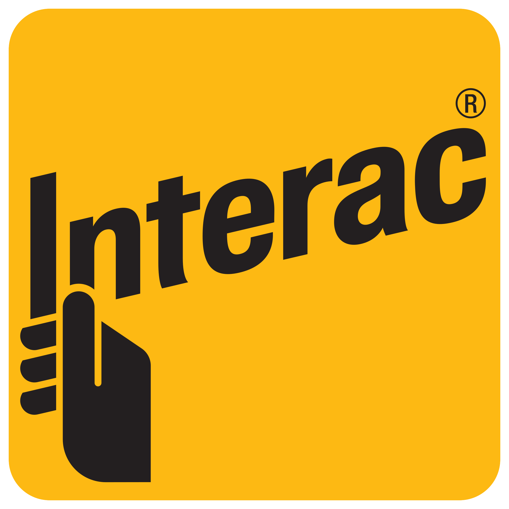
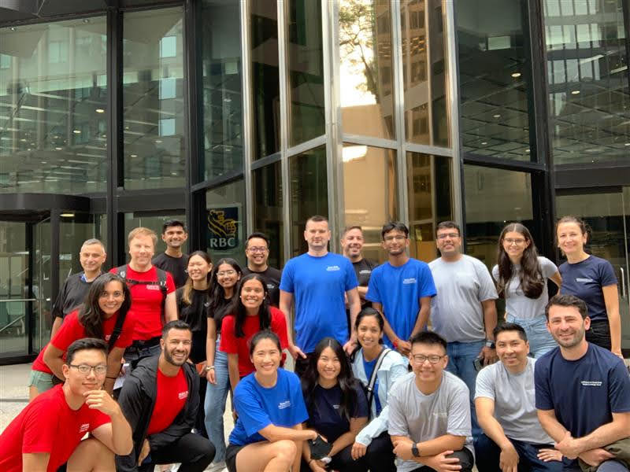

Launched in 1984, Interac is a Canadian interbank network that links financial institutions and other enterprises for the purpose of exchanging electronic financial transactions. Interac serves as the Canadian debit card system and the predominant funds transfer network via its e-Transfer service.
I worked as part of the Interac Innovation Lab - an agile and nimble team, the Interac Lab explores concepts, technologies and problem areas in payments, verification solutions and innovation. They tackle diverse scenarios and use cases built around the company’s core values of trust, privacy, and convenient access to financial data and services.
About My ManagerGoran Vukancic is the Tech Lead – Innovation Lab for Interac based out of the Interac Lab, a dedicated space for research, development and hands-on experimentation to tackle product and industry challenges – in the heart of the Kitchener-based tech community. He plays a critical role in exploring how we can implement new technologies into our products and services for Canadians.
I've gained extensively knowledge while working with Goran. I've learnt and mastered good coding practices in few technology frameworks, strengthened my communication during standups and presentations, and improved my puns skills.
Job DescriptionThe Innovation Lab's focus was on exploring and developing new and emerging trends in the fintech world. As a Co-op in the team, I mainly worked on two projects during my 8-month co-op at the Innovation Lab.
The first porject is a full stack application to describe the onboarding workflow when a new user is introduced to central digital bank currency, with the goal of canadian’s financial inclusion. I have worked on adding new pages using react and storing account information into database using API calls.
The second project is to predict the future trend direction by making analysis on published research paper. My responsibility is applied natural language processing onto the papers to make 1 sentence long summary and keywords for the paper topics. I have also made api calls to download the research papers and store it into the database.
At the end of the terms, I presented the projects in a department wide meeting.
GoalsMy first goal is to adopt the work environment. At the innovation lab, the codebase is not productized and is always fast and innovative. I want to quickly learn the latest tech stack and its benefits on any project. Besides programming, the lab also involves brainstorming, idea for POC, and many other tech or non-tech-related duties.
My second goal is to expand my technical skillset, especially in Python programming language, full stack development, and other best practices. Working on the projects at the Lab can really help me learn and understand how the frameworks work. For example, I have a great interest in learning data science. I would use the time working on Python ML libraries such as numpy and tensorflow.
My third goal is on a presentation/communication skill level. At the end of each 4-month work term, we are required to bring our projects to a broader audience in the department. This can be challenging because there are people who don’t understand any technical stuff. My goal is to engage the audience in a way that everyone understands the project while creating no confusion on any part of my speaking.
My last goal is to try my best to provide support to other lab members, since I am on an 8-month term I would gain enough knowledge on the project workflow and team culture. With my little extra experience, I can use them to help, guide and support the co-ops onboarded during the summer term. These include but are not limited to Introducing past/ongoing projects, providing coding guidance, leading weekly fun meetings, and so on.
Highlights
After 3 months of WFH and with only 3 weeks remaining in my term, I finally got to meet all the familiar faces from my Interac Corp - SIPES team in-person for a team social. We scavenger hunted around downtown Toronto and it was so much fun!
“Its about the journey, not the destination” is probably the perfect description of our teams dynamics. We really did enjoy the journey by starting off super competitive, to cooling down by getting gelato along the way, sharing the experience of getting drenched running in the rain, and learning more about all the cool things Toronto has to offer.
This social reminded me of how important it is to take time off and connect with your colleagues. Teamwork comes from all aspects and fostering those relationships just makes work that much more fun!
ConclusionIt feels bittersweet to say goodbye to this wonderful team after such a short amount of time. From day one, the entire SIPES team have been nothing but welcoming. My voice was always heard and my work, recognized. The empathy and compassion this team has is truly admiring.
My experience at Interac has been very valuable in furthering my career goals, technical skills, and knowledge as well as my interpersonal skills. Not only the skills I developed during the time, but it also really helped me to get a better understanding of my future career path. I really appreciate this opportunity to work with the team, company, and get to known many mentors helped me direct my career path.
AcknowledgmentsThanks to the team for trusting my expertise by empowering me to shape the lab’s innovation process and for the endless support. All the best to the team. Looking forward to see the Lab grow and hope we cross paths again in the future!
Thank you for your time reading! Last but not least, I want to thank Greg Klotz for helping me with my academic and Co-op related questions. Without him, I would never get these precious experiences.
End Home